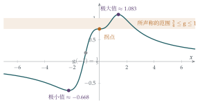

STEP I 1991，第 6 题
继续之前，请先阅读题目（原题为英文）。题目载于 STEP Support Programme 的题目资料库： step.maths.org/questions/91-s1-q6
引子
大多数考试题目都要求你写出一个论证。这一题却给你两个论证，要你把它们逐一拆解。这是一种截然不同的技巧，也是你在大学里最常用到的技巧：检查自己的作业、阅读书中的证明（proof）并判断是否相信它、批改朋友的解答、审阅论文。
这里的论证错得很有启发性。每一步看起来都像你见过上百次的东西。有些步骤含有计算上的失误，但更严重的是逻辑上的错误：即使计算无误，结论也推不出来。这类错误会一直残留到专业数学之中，而本章要谈的正是如何把它们找出来。
动笔之前
当题目要求你“评论每一步”时，你在每一步应该检查甚么？动笔之前先列一张清单。
一张好的清单至少有三个问题。计算正确吗？ 这一步能从前面的步骤推出来吗？ 有没有隐藏的假设（例如函数是连续的、极限存在、驻点必定是极大点或极小点）？题目还问到结论会否无论如何都是对的。错误的论证也可以有正确的结论，所以这一点需要另行检查。
逐步解题
阶段 1 导数对吗？
用商法则（quotient rule）对 \(\mathrm{g}\) 求导。\(\mathrm{g}'(x) = 0\) 在哪里成立？直接检查 \(x = 1\) 和 \(x = -1\)。
由商法则， \[\mathrm{g}'(x) = \frac{6x^2(x^4 + 4) - (2x^3 + 3)\cdot 4x^3}{(x^4 + 4)^2} = \frac{-2x^6 - 12x^3 + 24x^2}{(x^4 + 4)^2} = \frac{-2x^2\bigl(x^4 + 6x - 12\bigr)}{(x^4 + 4)^2}.\] 所以当 \(x = 0\) 或 \(x^4 + 6x - 12 = 0\) 时，\(\mathrm{g}'(x) = 0\)。在 \(x = 1\)，\(x^4 + 6x - 12 = -5\)；在 \(x = -1\)，其值为 \(-17\)。两者都不是驻点（stationary point）。第一个断言是错的。
四次多项式 \(x^4 + 6x - 12\) 在 \(x = 0\) 的值是 \(-12\)，而且在两个方向上都趋向 \(+\infty\)，所以它有（至少）一个正根和一个负根；它恰好有两个实根，因为它的二阶导数 \(12x^2\) 非负，所以它是凸（convex）的，最多只能穿过零两次。数值上，两个根是 \(x \approx 1.386\) 和 \(x \approx -2.247\)。
阶段 2 函数值对吗？
\(\mathrm{g}(0) = \frac34\) 是正确的，而 \(\mathrm{g}(1) = \frac{5}{5} = 1\)。但 \(\mathrm{g}(-1) = \frac{-2 + 3}{1 + 4} = \frac15\)，不是 \(1\)。即使按它自己的思路，这个论证也有计算错误：它似乎假设了 \(\mathrm{g}\) 是偶函数。
阶段 3 比较函数值能判断哪个是极大点吗？
假设一个函数恰好有两个驻点，驻点值分别是 \(\frac34\) 和 \(1\)。能否由此推出前者是极小点、后者是极大点？
不能。驻点的性质是局部（local）的性质：它取决于函数在该点附近的表现，而不是该点的函数值与别处的函数值孰大孰小。一个函数的局部极大值可以低于局部极小值（想想 \(x + 2\sin x\)），驻点也可以两者皆不是。在这里，在 \(x = 0\) 附近，因式 \(x^4 + 6x - 12\) 接近 \(-12\)，所以 \[\mathrm{g}'(x) = \frac{-2x^2(x^4 + 6x - 12)}{(x^4 + 4)^2} > 0 \qquad\text{对足够小的 } x \neq 0.\] 导数在 \(0\) 的两侧都是正的：\(x = 0\) 是一个驻拐点（stationary point of inflection），不是极小点。
阶段 4 驻点值能界定函数的范围吗？
即使驻点都求对了，为甚么仍不能断定 \(\mathrm{g}\) 的每一个值都介乎最小与最大的驻点值之间？找出一个使 \(\mathrm{g}(x) < \frac34\) 的 \(x\) 值。
驻点只描述局部的表现。全局（global）的表现还取决于定义域两端的情况，在这里即 \(x \to \pm\infty\) 时的情况。由于当 \(x \to \pm\infty\) 时 \(\mathrm{g}(x) \to 0\)，而且每当 \(2x^3 + 3 < 0\)，即 \(x < -\sqrt[3]{3/2} \approx -1.14\) 时，\(\mathrm{g}(x) < 0\)，所以这个函数会取负值。例如 \(\mathrm{g}(-2) = \frac{-13}{20}\)。因此结论 \(\frac34 \leq \mathrm{g}(x) \leq 1\) 是错的（图 3.1.1）。
正确的说法是：\(\mathrm{g}\) 递增至 \(x \approx 1.386\) 处约为 \(1.083\) 的全局极大值，然后向 \(0\) 递减；在左边，它由 \(0\) 递减至 \(x \approx -2.247\) 处约为 \(-0.668\) 的全局极小值，然后递增，经过 \(x = 0\)（在该处有一个水平拐点），一直升到极大值。所以对所有 \(x\)，\(-0.668 \lesssim \mathrm{g}(x) \lesssim 1.083\)。

阶段 5 积分
对 \(-3(1-x)^{-4}\) 求导。你会得到 \((1-x)^{-3}\) 吗？
\(\dfrac{\mathrm{d}}{\mathrm{d}x}\bigl[-3(1-x)^{-4}\bigr] = -3 \cdot (-4)(1-x)^{-5} \cdot (-1) = -12(1-x)^{-5}\)。幂和系数都错了。正确的原函数（antiderivative）是 \[\int (1-x)^{-3}\,\mathrm{d}x = \tfrac12(1-x)^{-2} + C,\] 你可以求导来验证。
用正确的原函数，\(\bigl[\frac12(1-x)^{-2}\bigr]_{-1}^{3} = \frac12 \cdot \frac14 - \frac12 \cdot \frac14 = 0\)。那么答案原来还是对的。真的吗？
并不是。微积分基本定理（fundamental theorem of calculus）\(\int_a^b F'(x)\,\mathrm{d}x = F(b) - F(a)\) 要求被积函数在整个区间 \([a, b]\) 上连续（continuous）。这里 \((1-x)^{-3}\) 在 \(x = 1\) 处没有定义，而这一点位于 \([-1, 3]\) 之内，而且在 \(x = 1\) 附近函数值极其巨大。这个积分必须当作瑕积分（improper integral）来处理，在出问题的那一点拆开： \[\int_{-1}^{1} (1-x)^{-3}\,\mathrm{d}x = \lim_{\varepsilon \to 0^+} \Bigl[\tfrac12(1-x)^{-2}\Bigr]_{-1}^{1-\varepsilon} = \lim_{\varepsilon \to 0^+} \left( \frac{1}{2\varepsilon^2} - \frac18 \right) = +\infty.\] 由 \(-1\) 到 \(1\) 的积分是无穷大（而由 \(1\) 到 \(3\) 的积分是 \(-\infty\)），所以 \(\int_{-1}^{3}(1-x)^{-3}\,\mathrm{d}x\) 不存在。结论“\(= 0\)”是错的，原因不在于真正的值是另一个数，而在于根本没有值。■
回顾
三类错误。计算错误（导数、\(\mathrm{g}(-1)\)、原函数）、逻辑错误（靠比较函数值来判别驻点的性质；把驻点值当作全局的界）以及隐藏的假设（微积分基本定理中的连续性）。
答案对，理由错。在第 (ii) 部分改正原函数之后，仍然得出答案 \(0\)，但论证依然无效。答案看似正确，并不能证明推理站得住脚。
局部与全局。导数告诉你的是函数在一点附近的表现。要得出全局的结论，还需要更多资料：定义域两端的情况，或者函数表现异常之处的情况。
背后的数学
分析学的奠基者也犯过一模一样的错误。柯西（Augustin-Louis Cauchy）在 1821 年的 Cours d’analyse 中“证明”了连续函数的收敛（convergent）和必定连续。1826 年，阿贝尔（Niels Henrik Abel）指出了一个反例（counterexample）：傅里叶级数（Fourier series） \[\sin x - \tfrac12\sin 2x + \tfrac13\sin 3x - \cdots\] 对每一个 \(x\) 都收敛，而且每一项都连续，但它的和在 \(x = \pm\pi\) 处出现跳跃（当 \(-\pi < x < \pi\) 时，它等于 \(x/2\)）。要弄清楚柯西的论证究竟错在哪里，花了数十年时间，并由此产生了一致收敛（uniform convergence）的概念，如今每个修读分析的学生都要学。隐藏的假设，尤其是关于交换两个极限次序的假设，是整个分析学中最常见的错误来源。
带有前提的定理
这一题中有两个错误，都源于忽视了定理的前提（hypotheses）。
极值定理（extreme value theorem）指出，在有界闭区间 \([a, b]\) 上的连续函数必定取得最大值和最小值。要找出它们，须检查端点、驻点，以及函数不可导的点：\(|x|\) 在 \([-1, 1]\) 上的最小值在 \(0\) 处取得，而这一点既非端点，亦非驻点。如果 \(\mathrm{f}\) 在区间内部处处可导，则位于内部的最大点或最小点必定是驻点。在整条实数线上，没有端点可供检查，函数甚至可能根本没有最大值；你必须改为考察 \(x \to \pm\infty\) 时的表现。
微积分基本定理要求被积函数在 \([a, b]\) 上连续。如果不连续，积分可能仍然存在（试试 \(\int_0^1 x^{-1/2}\,\mathrm{d}x\)），也可能不存在（如本题），你必须用极限来检查。
在大学里，你遇到的每一条定理都附有一张精确的前提清单。训练的一部分，就是每次使用定理之前，都要把这些前提检查一遍。
发散积分的一个值
第 (ii) 部分还有一个耐人寻味的注脚。区间 \([-1, 3]\) 关于出问题的点 \(x = 1\) 对称，而 \((1-x)^{-3}\) 关于该点是“奇”的。如果你挖去一个对称的缺口 \((1 - \varepsilon, 1 + \varepsilon)\)，再令 \(\varepsilon \to 0\)，两块无穷大的部分便会互相抵消，你确实会得到 \(0\)。这称为柯西主值（Cauchy principal value），在物理学和复分析中确实很有用。但它是一个刻意选取的不同定义，一个误打误撞得出这个值的论证，甚么也没有证明。
思维技巧
每一步都要检查三件事：计算对不对，这一步在逻辑上是否成立，以及有甚么是没有明说却已假设了的？
然后另行检查结论：不正确的论证可以有正确的结论，而“正确”的答案也可以出自无效的论证。对自己的作业也要同样严格审视；你最容易相信的论证，正是你自己的论证。
延伸练习
会说谎的代换。试做 STEP I 1987，第 8 题。一个代换（substitution）似乎显示某个正的积分等于一个负的积分。准确找出论证在哪里出错，然后正确地计算两个积分。
是对还是错？试做 STEP I 1998，第 3 题：有四个断言要你证明或否证。对每一个断言，动笔之前先判断你预期是哪一种。
所有马都是同一种颜色。找出以下用归纳法（induction）写成的“证明”的漏洞：任何一匹马都与自己颜色相同；给定 \(n + 1\) 匹马，由归纳假设，前 \(n\) 匹颜色相同，后 \(n\) 匹也是；两组有重叠，所以全部 \(n + 1\) 匹颜色相同。
一个确实存在的积分。证明 \(\int_{-1}^{1} |x|^{-1/2}\,\mathrm{d}x\) 存在，尽管被积函数在 \(0\) 处没有定义，并求出它的值。
延伸阅读
E. A. Maxwell, Fallacies in Mathematics（Cambridge University Press）。一本经典的谬误论证集，收录各种似是而非的错误论证，按课题编排，为高中第六学级（sixth form）学生而写。
Bernard Gelbaum & John Olmsted, Counterexamples in Analysis（Dover）。数以百计的例子，说明定理的前提为何重要。开始修读分析课程之后，不妨随手翻阅。
Imre Lakatos, Proofs and Refutations（Cambridge University Press）。一篇精彩的对话，探讨数学家如何发现并修正证明中的错误。